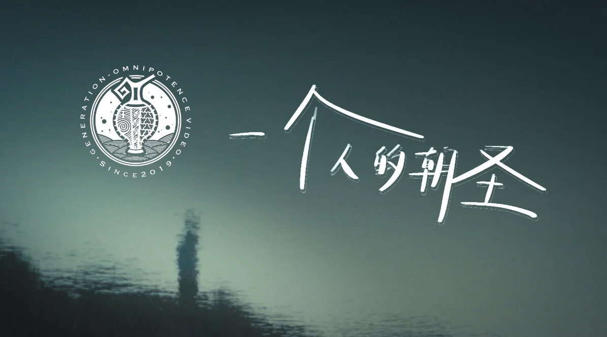
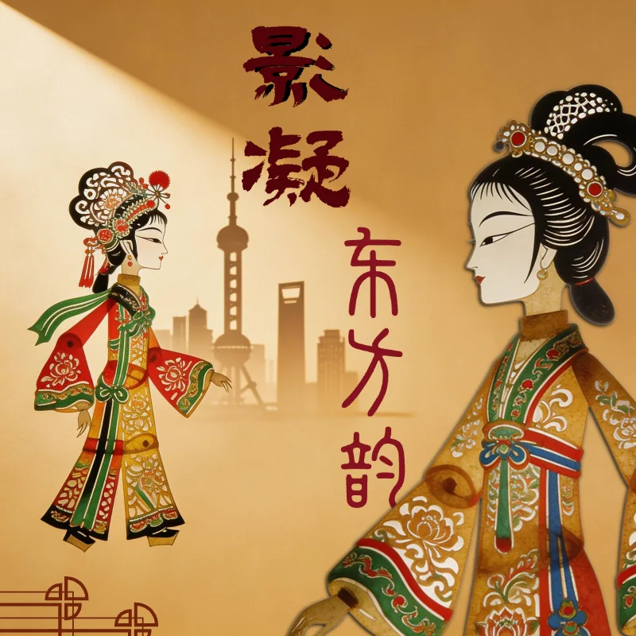
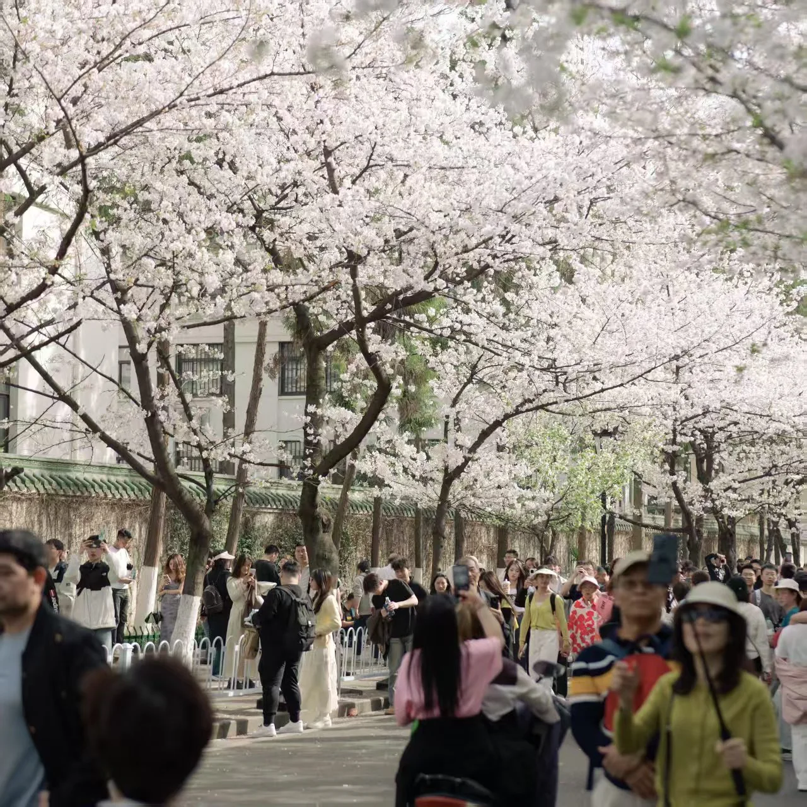
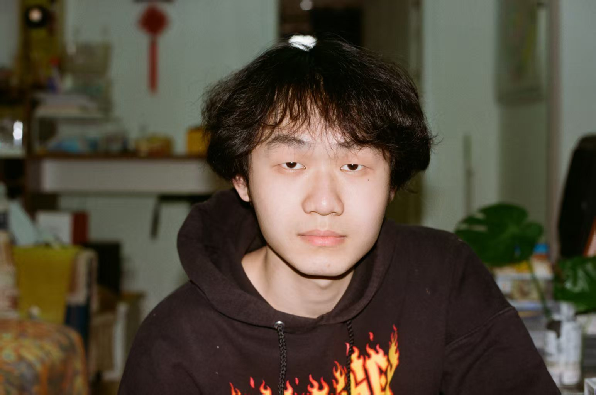
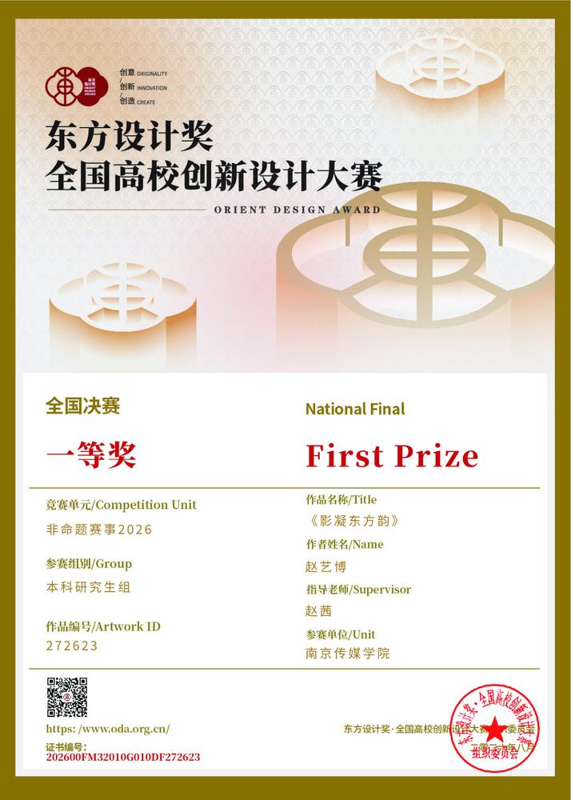
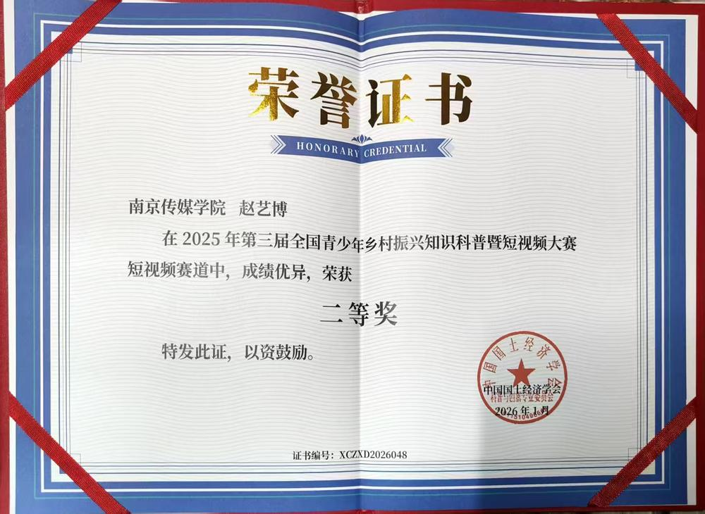
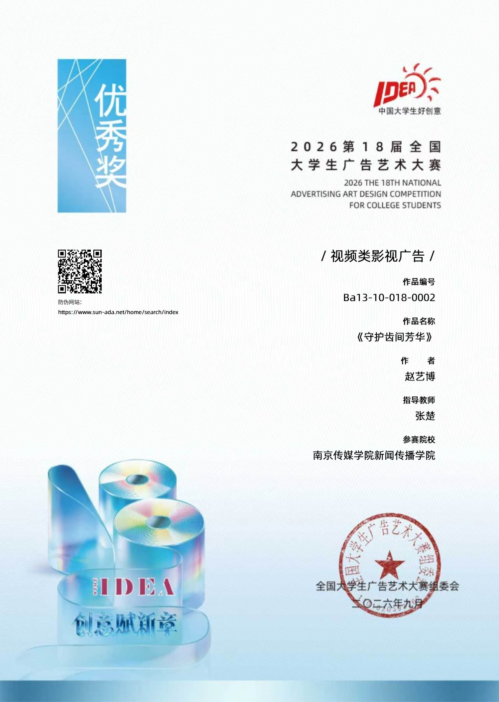
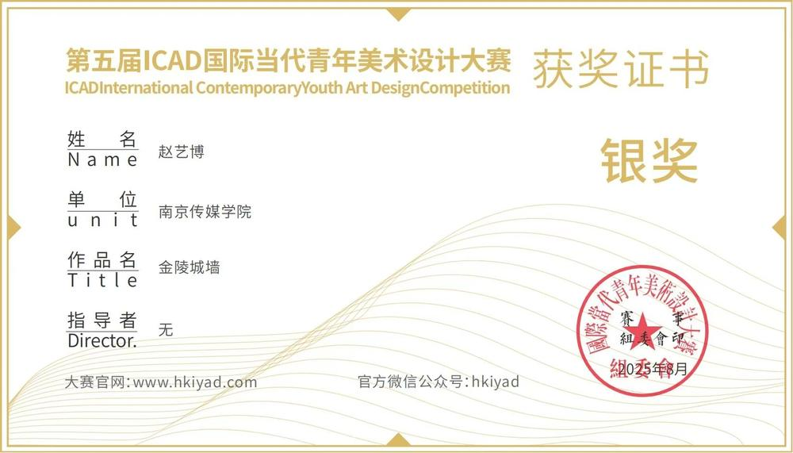

每一段文案、每一帧画面，都像是暗房里慢慢显影的胶片，需要耐心等待，才能看到最终的影像。
我是一名南京传媒学院广告学专业学生，在校期间做过微电影社团社长，也带过志愿协会的媒体部门，从策划到拍摄到剪辑都能独立完成。
工作之余，我喜欢用胶片相机记录生活，在暗房里冲洗照片，感受那种不可复制的、带有偶然性的美。
↑ 点击标签查看详情
南京传媒学院新闻传播学院公众号《南传新发现》专题报道：四十余项竞赛奖项、专业第三、WAIC 展区入展——一名青年创作者的阶段性成长答卷。
取景甘肃兰州的文艺电影短片。担任编剧与灯光设计，全网播放量突破 50 万，获新片场金雀奖校园精英大赛最佳编剧、摄影二等奖，及松下 GOV 最佳编剧、最佳影片等荣誉。
国际在线实习期间参与乡村振兴云南特色产业纪实项目，负责选题、文案与剪辑。全平台播放量破百万，被二十余家主流媒体转载，实现乡村文化内容破圈传播。
聚焦皮影戏非遗文化的数字化科普短片。担任导演与 AIGCer，融合国风虚拟场景与传统皮影元素，以年轻化影像语言实现传统文化与 AI 创作的创新融合。
城市人文、街巷纪实与自然风光原创实拍。以镜头捕捉日常光影与市井百态，在行摄中定格时光碎片，沉淀专属的影像审美与创作风格。




Let’s make something worth developing.
有项目合作的想法，或者只是想聊聊胶片与影像？随时给我写信。